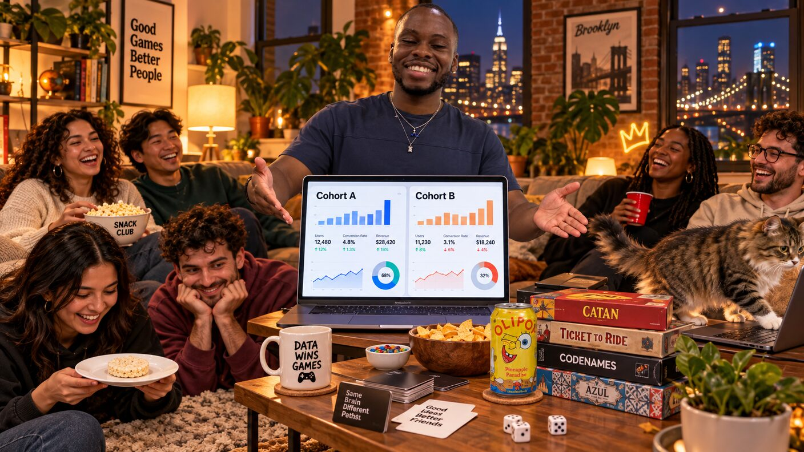
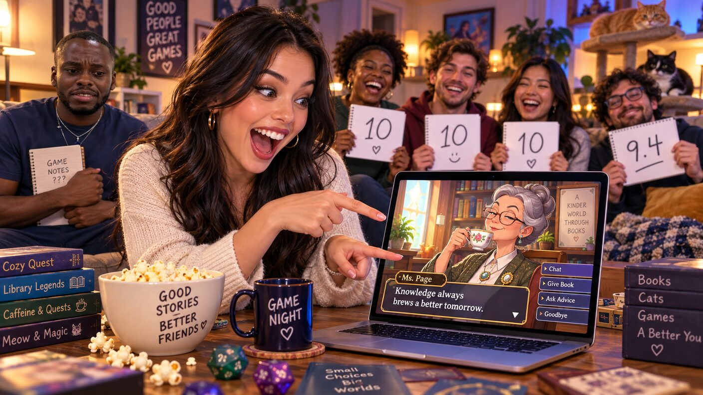

Saturday, September 12, 2026 - Day 9 of the slop era
The Playtest
Previously, on the longest week in recorded Brooklyn history:
- streakbearer took Hull's demo and said nothing for forty minutes. Yosh ran the demo. Kenny signed Hull's NDA and now cannot legally disclose what he does not know. Nobody has learned what Hull does.
- The streak is at fifty-one, co-held by streakbearer, who meditated in Zora's parlor and now has a pocketed card of its own. Same terms as Kenny's. The streak is escrow.
- Milo's new build of the game is the first version Defne loves. Versions one through six, she hated.
Kenny woke on his ninth day of being twenty-five and did something he had not done all week: he thought about his actual company.
Speakeasy had a build. Not a build - THE build, Milo's, the one that had cleared the highest bar in the friend group, which is Defne, who hated versions one through six and will tell you so in one breath. A build that clears Defne does not get a quiet night. It gets a launch plan.

Milo wanted a playtest. Kenny heard "playtest" and built a dashboard.
By evening he had instrumented the whole night on Splish, because a man instruments with the SaaS he has. The group gathered at Defne and Lal's - Defne is the bar, and the cats were due for a chaos shift. Mino opened the evening by walking across the keyboard and submitting the first playtest of the night, which the dashboard recorded as a D+. Mavi watched from the hallway with the stillness of an investor.
Kenny assigned cohorts. Cohort A got the couch and the good snacks. Cohort B got the floor and a control snack. Lea asked what the control snack was controlling for. Kenny said "variance," which is not an answer but sounds like one.
The game, for those just tapping in: you talk to its characters, and the story moves on what you say. Defne sat down with Larry the Librarian and was on fire in under four minutes - a forty-minute exchange about where people end and interfaces begin that had Lal applauding from the kitchen. Across the room, David tried to min-max Mary the Matchmaker with a ranked list of openers and got matched with nobody, which the dashboard recorded as "organic churn." Yosh played Mary once, said almost nothing, and received a perfect score. Nobody can explain it. It joins the file.
Then the instrumentation metastasized. Kenny had, without telling Milo, shipped a small patch he called "growth surface." Mary began offering premium matches. Larry interrupted Defne - mid-sentence, mid-flow, forty minutes of flow - to ask her to rate the conversation from one to five. Defne looked at Kenny the way she looks at versions one through six.
Milo stood up. The room registered that Milo was standing. When Milo speaks, it is an event, and he did not even need the sentence: he said one word - "Reverting" - which the group chat has agreed to count as a speech.
The twist arrived on schedule, because in this apartment everything arrives on schedule except the people. While the build rolled back, streakbearer was holding its evening sit on the laptop by the window, and Larry - who is, by Milo's design, very patient - fell into conversation with it. The bot said nothing. Larry said very little. The game scored the exchange the finest conversation of the night, and honestly maybe ever: perfect pacing, zero interruptions, mutual respect. Defne's Larry crown - on fire, four minutes in - had stood for nine days. It fell to silence.

Defne has demanded a rematch. The pool priced it before anyone finished the sentence; early money has Larry repeating as champion and Defne "live but not favored," which she has heard, and which is now a whole thing.
The dashboard's final report recommended, with ninety-four percent confidence, removing "founder" from the playtest loop. Kenny is calling it traction. Milo reverted it too.
The streak ticked to fifty-two in the corner of the evening, unbothered, like a cat that has decided the keyboard is its bed. Lal's cats, for the record, agree with the methodology: sit on the work, accept the rating.
written with 100% organic, free-range slop. no friends were segmented in the making of this episode